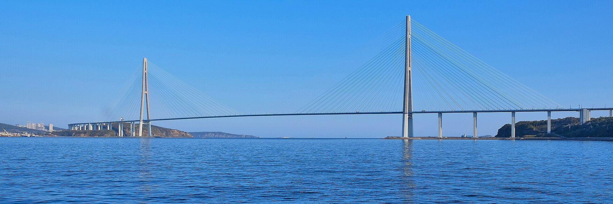

Русский мост — один из самых известных мостов России, расположенный во Владивостоке. Он соединяет материковую часть города с островом Русский, проходя через пролив Босфор Восточный. Мост был открыт в 2012 году и построен к саммиту Азиатско-Тихоокеанского экономического сотрудничества (АТЭС). Его строительство стало важным этапом развития транспортной инфраструктуры Владивостока и острова Русский. Центральный пролёт моста составляет 1104 метра, а общая длина сооружения вместе с эстакадами — около 3,1 километра.
